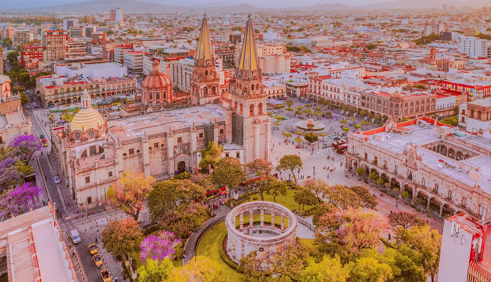
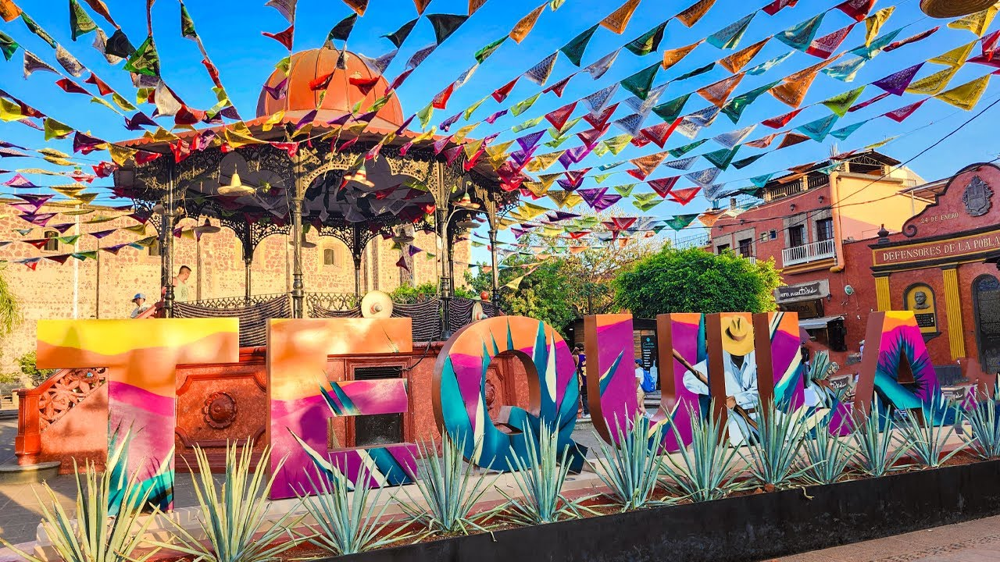
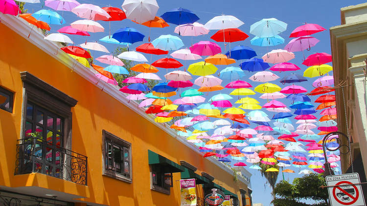

| Navegacion rapida | ||
|---|---|---|
| Destinos | Galeria | Informacion extra |
Introduccion
Jalisco es un estado con una gran diversidad de atractivos turisticos. Algunas personas lo visitan por su historia, otras por sus playas, otras por su cultura y muchas mas por su comida. Esta variedad hace que el turismo sea una de las actividades mas importantes del estado.
En Jalisco es posible encontrar grandes ciudades, centros historicos, pueblos magicos, zonas artesanales, paisajes naturales y destinos costeros. Gracias a esto, cada visitante puede vivir una experiencia distinta y conocer diferentes aspectos de la riqueza jalisciense.
Principales destinos turisticos
| Lugar | Tipo de destino | Descripcion |
|---|---|---|
| Guadalajara | Ciudad | Capital del estado, famosa por sus plazas, templos, museos y actividad cultural. |
| Puerto Vallarta | Playa | Destino costero muy visitado por sus playas, su malecon y su ambiente turistico. |
| Tequila | Pueblo magico | Conocido por el paisaje agavero y por la produccion de tequila. |
| Lago de Chapala | Paisaje natural | Zona ideal para descansar, apreciar vistas y disfrutar del contacto con la naturaleza. |
| Tlaquepaque | Centro artesanal | Muy reconocido por sus artesanias, su musica y su ambiente tradicional. |
| Zapopan | Ciudad | Importante por su crecimiento urbano, su arquitectura y su valor religioso. |
| Destino destacado |
|---|
| Puerto Vallarta es uno de los lugares mas famosos por combinar playa, paisaje y ambiente turistico. |
Que se puede hacer en Jalisco?
- Visitar centros historicos y edificios emblematicos.
- Disfrutar playas y recorridos costeros.
- Tomar fotografias de paisajes urbanos y naturales.
- Comprar artesanias y productos regionales.
- Probar la comida tipica en mercados y restaurantes.
- Asistir a festivales culturales y eventos musicales.
- Recorrer plazas, malecones y calles tradicionales.
Razones para visitar el estado
- Porque ofrece destinos diferentes en una sola entidad.
- Porque combina tradicion, modernidad y hospitalidad.
- Porque cuenta con playa, ciudad, cultura y naturaleza.
- Porque su gastronomia complementa la experiencia turistica.
- Porque muchos de sus sitios tienen valor historico y cultural.
- Porque es uno de los estados mas representativos de Mexico.
Ruta turistica sugerida
Una ruta por Jalisco puede comenzar en Guadalajara para conocer sus templos, museos, plazas y edificios historicos. Despues se puede visitar Tlaquepaque para apreciar artesanias, musica y un ambiente mas tradicional. Mas adelante, el pueblo de Tequila permite conocer la historia del agave y la produccion de una de las bebidas mas famosas de Mexico.
Finalmente, Puerto Vallarta ofrece un cierre ideal con playa, paisajes costeros, gastronomia y descanso. Este recorrido muestra como Jalisco puede ofrecer experiencias muy distintas dentro de un mismo estado.
Importancia del turismo para Jalisco
El turismo es una actividad muy valiosa para la economia del estado porque genera empleos, impulsa el comercio y promueve la difusion de la cultura local. Ademas, ayuda a conservar sitios historicos, tradiciones y espacios naturales que atraen a visitantes nacionales e internacionales.
Gracias a su riqueza cultural y natural, Jalisco se mantiene como uno de los destinos mas importantes del pais.
Algunos lugares mas conocidos
Guadalajara

Puerto Vallarta

Tequila

Guadalajara, Puerto Vallarta y Tequila son tres destinos muy representativos del turismo jalisciense.

El turismo en Jalisco destaca por la variedad de paisajes que pueden encontrarse dentro del estado.
| Galeria turistica sugerida |
|---|
Chapala 
|
|
Tlaquepaque  |
Informacion adicional sobre el turismo
El turismo en Jalisco es valioso no solo por la cantidad de visitantes que recibe, sino tambien por la variedad de experiencias que puede ofrecer. Algunas personas prefieren conocer ciudades historicas, otras buscan descansar en la playa, y otras desean visitar pueblos con un ambiente mas tradicional. Esa diversidad permite que el estado se adapte a distintos intereses y edades.
Tambien debe destacarse que muchos lugares turisticos funcionan como espacios donde se conserva la cultura local. En ellos se venden artesanias, se preparan comidas tipicas, se realizan festivales y se mantienen vivas costumbres que forman parte de la identidad jalisciense. De esta forma, el turismo no solo genera beneficios economicos, sino que tambien ayuda a difundir y valorar el patrimonio cultural del estado.
Conocer los destinos de Jalisco es una forma de acercarse a la historia, a la geografia y a la tradicion de la entidad. Cada ciudad, pueblo o paisaje ofrece elementos diferentes, y juntos muestran por que este estado es uno de los mas atractivos y completos de Mexico en materia turistica.
| Dato turistico curioso | |
|---|---|
| * | En Jalisco puedes pasar de un centro historico a una playa o a un pueblo tradicional, lo que hace muy variada la experiencia de viaje dentro del estado. |
Mas informacion sobre destinos turisticos:
Turismo en Jalisco - Wikipedia